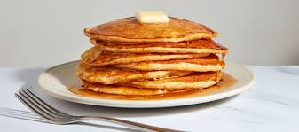

pancakes recipes

Description
pancakes is one of my favorite dish. Below is the details and guidelines to make this delicious food.
Ingredients
- 1 cup all-purpose flour
- 1 tablespoon white sugar
- 1 teaspoon baking powder
- ½ teaspoon baking soda
- ¼ teaspoon salt
- 1 cup milk
- 1 egg
- 2 tablespoons vegetable oil
Steps
- Pre-heat a lightly oiled griddle over medium-high heat
- Combine flour, sugar, baking powder, baking soda, and salt. Make a well in the center. In a separate bowl, beat together egg, milk, and oil. Pour milk mixture into flour mixture. beat until smooth.
- Pour or scoop the batter onto the hot griddle, using approximately ¼ cup for each pancake. Brown on both sides and serve hot.
Nutrition Facts
Per Serving: 315 calories; protein 9.1g; carbohydrates 40.2g; fat 13g; cholesterol 68.mg; sodium 580.9mg.